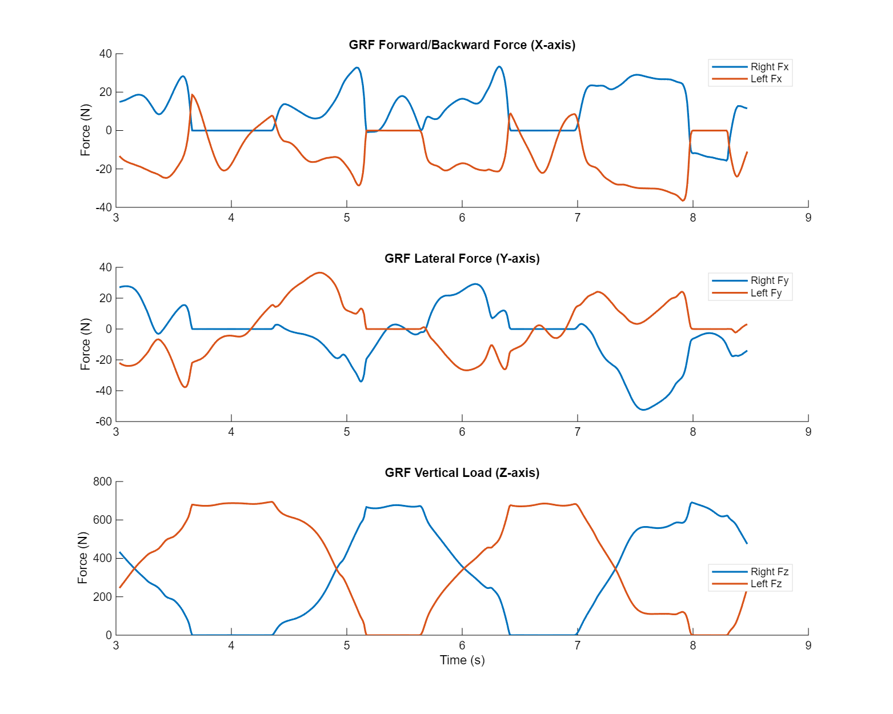
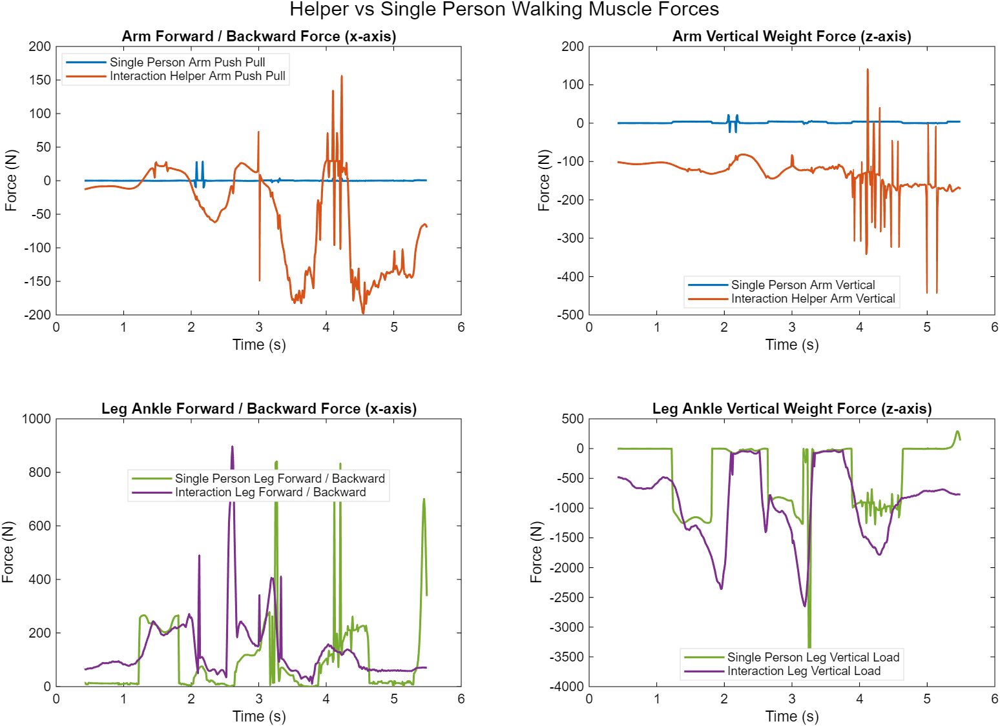

How much of your weight does a helper carry?
Before a humanoid robot can help someone walk, you need to know what a human helper actually provides: how much load comes off the knee, where it goes instead, and what the helper's wrist has to hold. I take motion capture of two people walking together, one leaning on a rod the other holds, drive a musculoskeletal simulation with it, and pull the joint forces out.
Measured the joint loads and the correlation statistics: 600 N against 1600 N, 8 N·m against 23 N·m, R² 0.03, cosine similarity 0.58, all from AnyBody inverse dynamics driven by motion capture. Illustrative the stick figure and the two correlated signals, which are a static toy and synthetic data built to make the statistic legible.
Lean on the rod
Stand on one leg and every newton of your weight goes through that knee, plus whatever your thigh muscles add to keep the knee from folding. Now push down on a rod someone else is holding. The knee load drops, the knee torque drops with it, and something new appears: to push on the rod sideways without falling over, your foot has to push the ground sideways too. Drag the sliders. The stick figure is a static toy; the numbers beside it are the measurement.
Toy model: single leg stance, static, knee load = ground reaction plus the quadriceps force needed to hold the flexion moment. Measured values come from AnyBody inverse dynamics driven by motion capture of the assisted walking task.
The measured story is coherent and the toy shows why. Shifting weight onto the hand cut the assisted knee's peak vertical load to about a third of the unassisted knee, 600 N against 1600 N, and its peak torque to about a third, 8 N·m against 23 N·m. The price was a large lateral force at the assisted ankle, 800 N, to keep from tipping toward the rod. On the other end of the rod the helper's wrist sustained 145 N vertically and 350 N laterally. A robot that wants to do this job has to supply those forces, at that wrist, without pulling the person over.
Does the residual force hide a bad prediction?
An inverse dynamics model has to balance. When the measured motion and the modeled forces do not quite agree, AnyBody applies a residual, nicknamed the Hand of God, to close the books. If that residual is large and tracks the ground reaction force, it may be silently compensating for a ground reaction that the model got wrong, and every joint load downstream would be suspect. I tested that hypothesis directly with correlation statistics: R² of 0.03 and cosine similarity of 0.58 between the residual and the ground reaction force, across ten or more force and moment channels. The residual does not track the reaction. The hypothesis was rejected.
Synthetic signals, not lab data: one is a walking style reaction force, the other is a residual that you can couple to it. Drag the coupling and watch what R² of 0.03 looks like next to 0.9.
The same analysis flagged something else: the interaction force magnitudes between the two people were implausibly large. Rather than report them as a finding, I treated them as a data collection problem and pointed at mixed up motion capture markers between the two subjects as the likely cause. The single person baseline, which shows near zero arm forces where the assisted model shows large spikes, confirmed that the trend is real even though the magnitudes are exaggerated.
One pipeline instead of sixteen scripts
The analysis had grown into sixteen single purpose MATLAB scripts, eight for extraction and eight for plotting, run by hand in order. I consolidated them into one pipeline that runs end to end from a single entry point, skips missing datasets instead of crashing, and writes its reports to assigned folders. The part that mattered most is the path resolution. AnyBody's HDF5 export changes its internal layout between studies, so a hard coded path breaks silently on the next export. Each extraction module carries a list of candidate paths and tries them in order until one resolves, and handles both three by N and flat dataset shapes. Pick a layout and watch the resolver work.
From the lab


The chain is ViCon motion capture, processed in MATLAB, driving AnyBody inverse dynamics, exported to HDF5, extracted and plotted in MATLAB. The application is human robot interaction, and alongside the simulation work I have been doing a comparative literature review of control systems and nonlinear control for the assistance problem. Code for the extraction and plotting pipeline is in the repository; the subject data is not public.